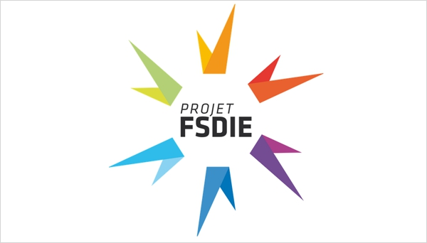

1.2.1. Partenariat et Subvention¶
Chaque annee le club a besoin d’argent en plus de l’inscription annuelle. Nous avons a partir des archives estimer les besoins du club a 3000€ par an uniquement pour la participation a la coupe de france de robotique Des frais supplementaire s’ajoute pour les consommable du club et d’autre besoin
1.2.1.1. Dossier¶
Le but est de rediger un dossier chaque année presentant le club et nos projet. Expliquer pourquoi nous sommme a la recherche d’un partenariat : la participation a la coupe de france de robotique. Donner une estimation du budget necessaire pour cette participation. Indiquer ce que nous et l’entreprise avons a gagner de ce partenariat et donner les moyen de communication et ce que l’on peut leur offrir en echange de dont monnetaire ou materiel
1.2.2. Ecole / BDE¶
Historiquement le club recoit de l’argent de l’ecole, ce montant s’eleve a 1000€. suite a une enorme confusions provenant du BDE qui pense que l’argent vient de leur fiancement nous avons accepter de reduire notre subvention annuelle a 500€ Il est important de bien mettre au courant chaque nouveau tresorier du bde de ce financement en 2023-2024 le directeur de l’ecole change, il est donc envisageable d’aller le voir pour se presenter et l’informer de cette subvention annuelle
1.2.3. FSDIE¶
{kind=link}
Le FSDIE, Fonds de Solidarité et de Développement des Initiatives Etudiantes, permet de financer des projets d’associations étudiantes de l’université dans des domaines variés : projets humanitaires, activités culturelles ou sportives, animation du campus…
un calendrier est mit a jour tous les ans avec les date limite de depose des dossier et la date des convention
Le deroulement est le suivant : depose du dossier de financement avant la date limite presentation oral devant un jury de notre association et de notre projet envoie de notre dossier a un jury qui valide ou non notre demande
il y a plusieurs condition a remplir pour deposer un dossier de financement aupres de la fsdie
etre une association et prenseter tous les documents necessaire, ce n’est pas notre cas mais nous pouvons deposer un dossier au nom du BDE et utiliser leur papiers
Pour les projets de plus de 500€ presenter un cofinanceur du projets, donc une autre subvention
presenter un dossier complet celon leur modele
a la fin du projet presenter un bilan moral et financier
En prensentant un projet au nom du bde nous pouvons ainsi toucher de l’argent pour la participation a la coupe de robotique
1.2.3.1. 2022-2023¶
Nous avons donc deposer un dossier a la fsdie en fin 2022 et nous avons recu le financement courant fevrier 2023. Nous avions presenter un projet necessitant un budget de 3000 € et nous avions demander a la fsdie de financer 40% ce projet soit 1200 €. nous avions en tant que cofinancement l’entreprise Coriolis Composites.
le dossier presenter est ici sur le drive du club : https://drive.google.com/drive/u/0/folders/1kwcVIV-iy9JuzpI_yzn_k8ba-iMOJs_t
1.2.4. Coriolis Composites¶
{kind=link}
Coriolis Composites develops, produces and commercializes robotic cells and value-added software for automated composite additive manufacturing. Its strong expertise in composite technologies allows Coriolis Composites to offer off-the-shelf and tailored solutions to your industry.
1.2.4.1. 2022-2023¶
Nous sommes aller voir l’entreprise en physique a queven en octobre, nous avons prit un rendez vous pour presenter notre projet a un employer qui a ensuite presenter ce projet lors d’un conseil. l’entreprise a accepter de nous accompagner et de financer 40% de notre projets a 3000€. nous avions ainsi notre coffinanceur pour le dossier de la fsdie
1.2.4.2. 2023-2024¶
Reprise de contact avec notre interlocuteur de l’année precedante, Ivan HARDY. ce dernier nous reoriente vers Matthieu DUPUIS
1.2.5. IGUS¶
IGUS est une entreprise specialiser dans la realisation de piece mecanique plastique sans graisse.
1.2.5.1. 2023-2024¶
L’entreprise est venu durant l’ete 2023 pour poser un IGUS corner au sein du club. Ce presentoir est gratuit et renouveller par l’entreprise tous les ans. L’objectif est de travailler avec IGUS afin d’obtenir des echantillon permettant d’ameliorer les robots